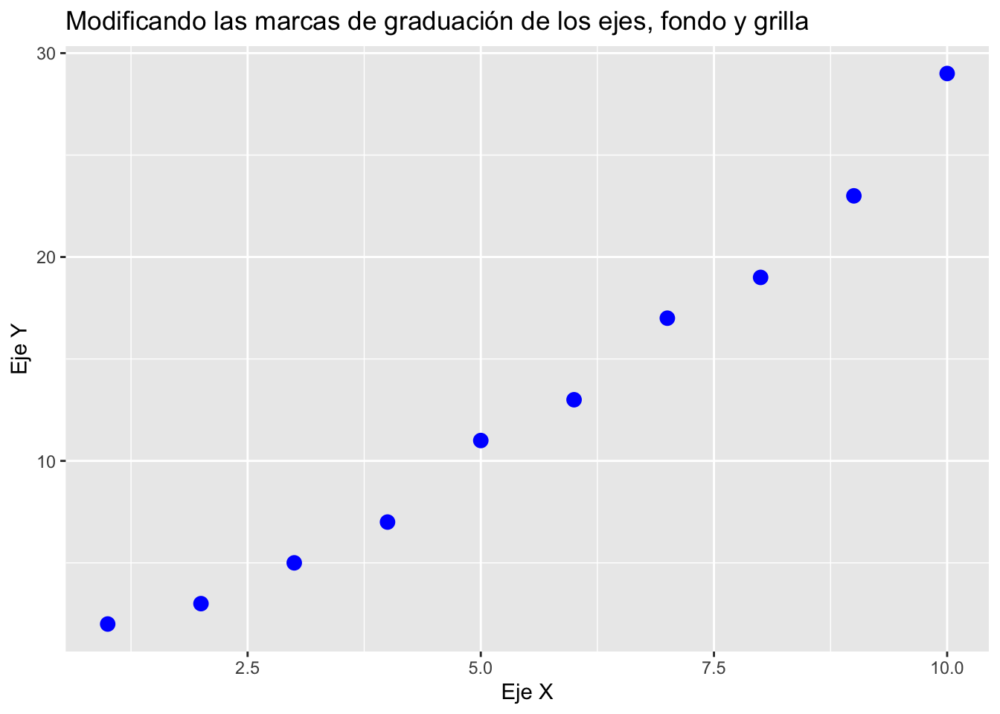
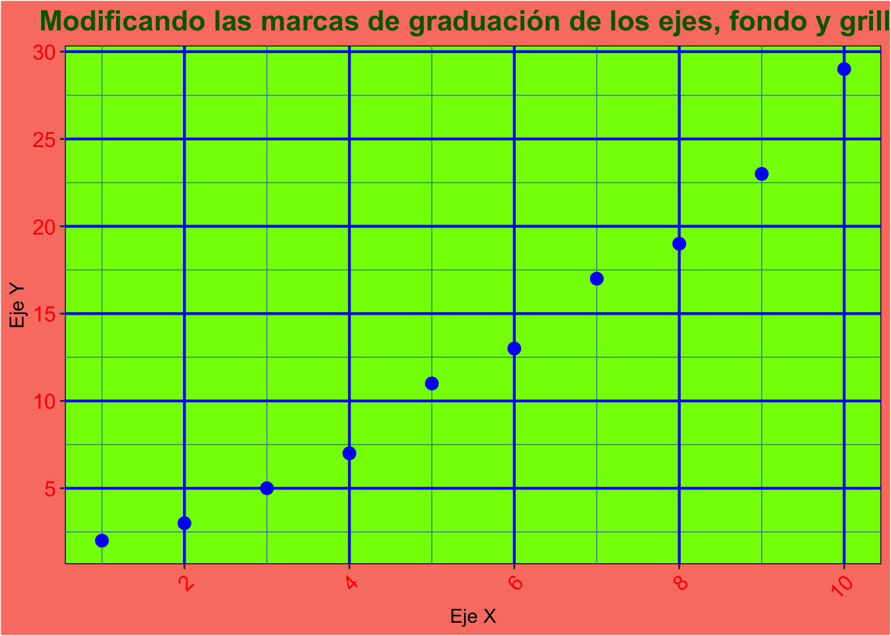
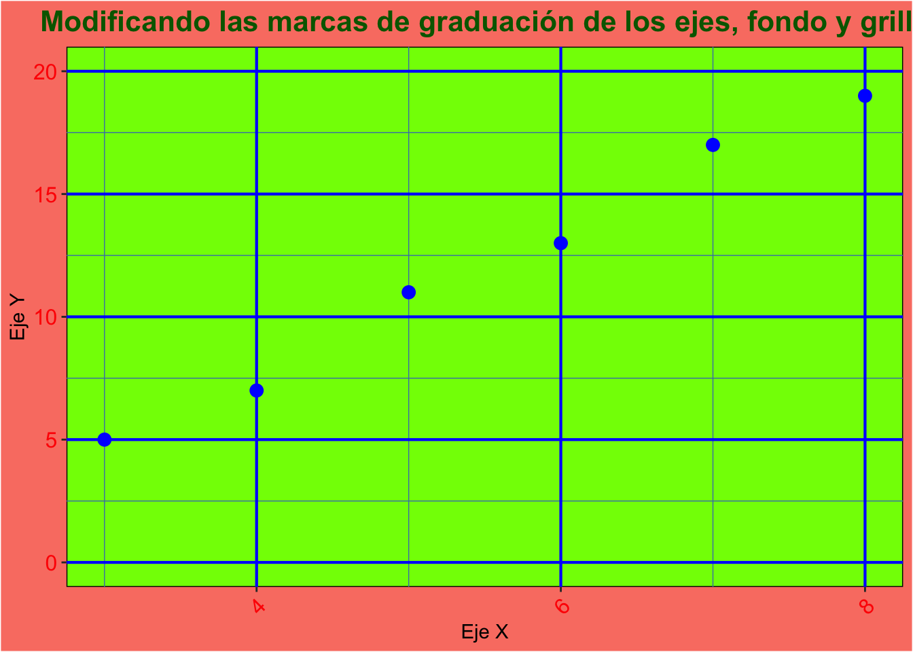
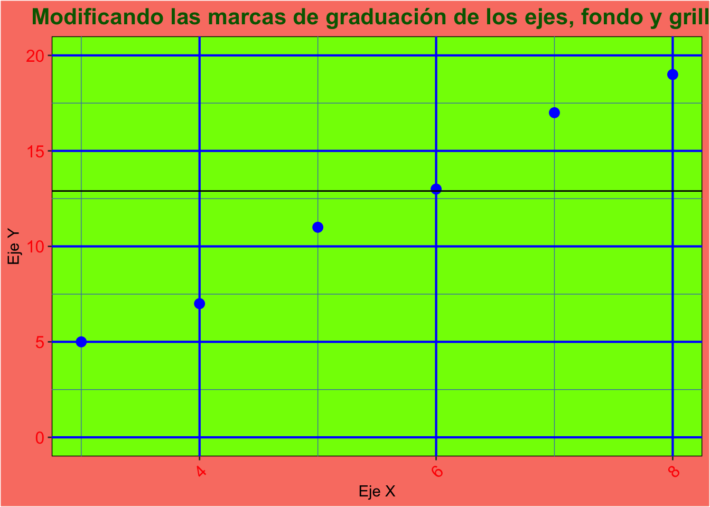
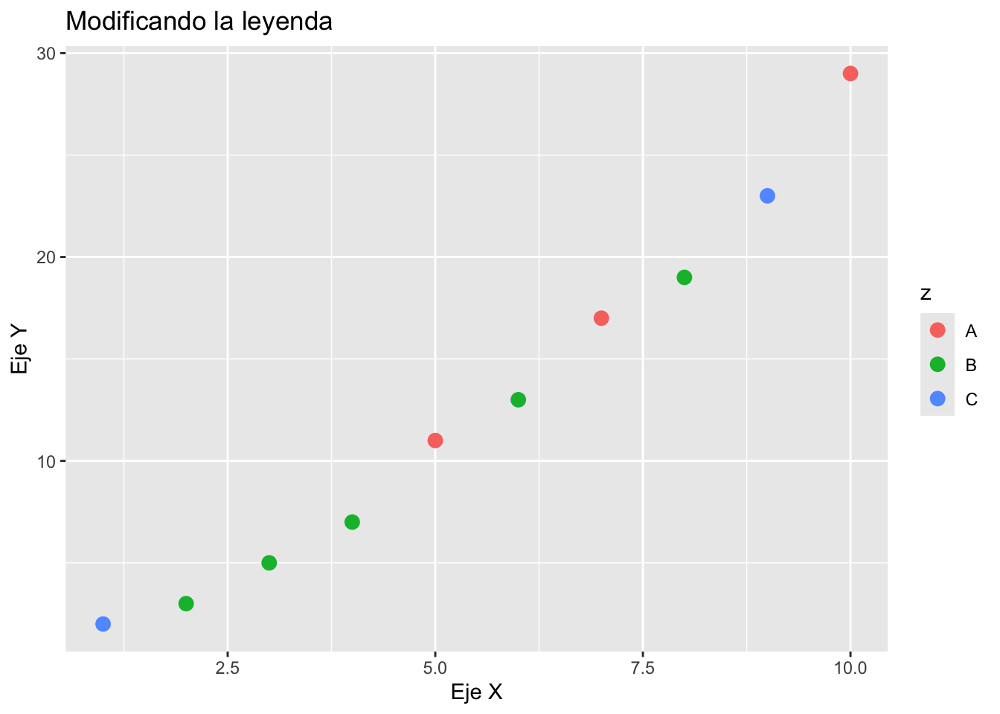
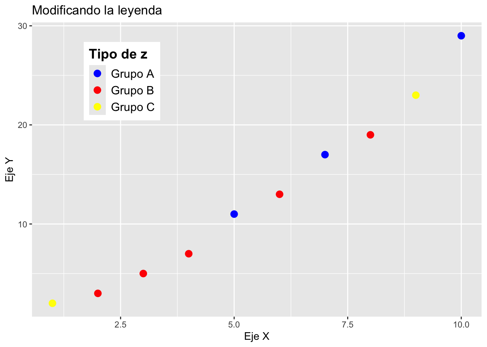

Modificando los títulos, los ejes, el fondo y la grilla
Anotaciones, leyendas en un gráfico de ggplot2
Autor/a
Carlos Lesmes
Fecha de publicación
4 de octubre de 2024
1 Elementos básicos
Primero creamos un dataframey activamos el paquete ggplot2
Código
library(ggplot2)set.seed(1234)datos <-data.frame(x =1:10, y =c(2, 3, 5, 7, 11, 13, 17, 19, 23, 29), z =sample(c(rep("A",3),rep("B",5),rep("C",2)), replace =FALSE))datos
x
y
z
1
2
C
2
3
B
3
5
B
4
7
B
5
11
A
6
13
B
7
17
A
8
19
B
9
23
C
10
29
A
Creamos un diagrama de dispersión con las dos variables del dataframedatos
Código
p <-ggplot(datos, aes(x = x, y = y)) +geom_point(size =3, color ="blue") +ggtitle("Modificando las marcas de graduación de los ejes, fondo y grilla") +xlab("Eje X") +ylab("Eje Y")p

2 Modificando las marcas de graduación de los ejes
En el eje X en intervalos de tamño 2 y en el eje Y intervalos de tamaño 5.
Código
p <- p +scale_x_continuous(breaks =seq(0, 10, by =2)) +scale_y_continuous(breaks =seq(0, 30, by =5)) p
3 Modificando el fondo y la cuadrícula
Código
p <- p +theme(# Modificando el fondopanel.background =element_rect(fill ="chartreuse", color ="black"), # fondoplot.background =element_rect(fill ="salmon"), # borde del fondo# Modificando la cuadrículapanel.grid.major =element_line(color ="blue", linewidth =0.75), # Azul para las lines grandespanel.grid.minor =element_line(color ="steelblue", linewidth =0.25),# azul claro para las pequeñas# Modificando los ejes, el tamaño de letra y el ánguloaxis.text.x =element_text(size =12, angle =45, hjust =1), # tamaño de texto y ángulo del eje Xaxis.text.y =element_text(size =12), # tamaño del texto en el eje Y# Modificando el color y tamaño del títuloplot.title =element_text(color ="darkgreen", size =16, face ="bold", hjust=0.5),# modificando el color del texto de los ejesaxis.text =element_text(colour ="red")) p

4 Hacer zoom
Restringimos el área del gráfico, en el eje X de de 3 a 8 y en el eje Y de 0 a 20.
Código
p <- p +coord_cartesian(xlim =c(3, 8), ylim =c(0, 20))p

5 Agregar líneas horizontales y/o vertivales
Código
p <- p +geom_hline(yintercept =mean(datos$y),color="black")p
Código
p +geom_vline(xintercept =mean(datos$x),color="black")
Código
p

6 Modificando la leyenda
Código
p1 <-ggplot(datos) +geom_point(aes(x = x, y = y, color = z),size =3) +ggtitle("Modificando la leyenda") +xlab("Eje X") +ylab("Eje Y")p1

Código
p1 <- p1 +scale_color_manual(values =c("A"="blue", "B"="red", "C"="yellow"), name ="Tipo de z", labels =c("Grupo A", "Grupo B", "Grupo C") ) +theme(legend.position ="bottom", legend.title =element_text(size =14, face ="bold"), legend.text =element_text(size =12) )p1
6.1 Poner la leyenda dentro del gráfico
Código
p2 <- p1 +scale_color_manual(values =c("A"="blue", "B"="red", "C"="yellow"), name ="Tipo de z", labels =c("Grupo A", "Grupo B", "Grupo C") ) +theme(legend.position =c(0.2,0.8), legend.title =element_text(size =14, face ="bold"), legend.text =element_text(size =12) )
Scale for colour is already present.
Adding another scale for colour, which will replace the existing scale.
Warning: A numeric `legend.position` argument in `theme()` was deprecated in ggplot2
3.5.0.
ℹ Please use the `legend.position.inside` argument of `theme()` instead.
Código
p2

7 Hacer anotaciones dentro del gráfico
Código
p2 +annotate(geom ="text", x =6.2, y =13, label ="Punto rojo", hjust ="left")